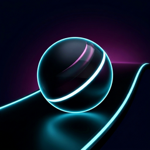

Hyperslope
An endless 3D neon arcade runner for iPhone and iPad. Steer a smoked-glass orb down one unbroken curving track, graze hazards to ignite Overdrive, and chase high scores across four beat-synced zones.
How to play
Steer: drag anywhere on the screen for 1-to-1 continuous steering (or switch to Tap Sides in Settings). Game controllers and keyboards work too.
Jump and fast-drop: swipe up to leap across drops and barriers; swipe down in mid-air to drop sharply back onto the track. Diagonal flicks work while steering.
Overdrive: pass close to obstacles to graze them and charge the Overdrive bar. When full, Overdrive activates automatically, letting you smash straight through hazards at double score.
Modes: choose Endless for open score chasing, Daily for one shared seeded track each UTC day with rotating modifiers, or Zen to roll endlessly with no crashes.
Common questions
Do purchases make the game easier? No. Every item in the Shop is purely visual (ball glass, glow, trail, crash burst, rail colours, and sky). Speed, physics, hitboxes, and scoring are identical for everyone.
I bought something on another device. How do I get it here? Open the Shop from the title screen and tap Restore Purchases at the bottom. Your purchases follow your Apple Account across your devices.
Why don't I see Global or Friends high scores? Sign in to Game Center in your device's Settings, then reopen Hyperslope. Your local Top 10 Endless and Top Daily scores are always saved on your device.
Can I adjust motion, flashing, or controls? Yes. Open Settings (top-right on the title screen) for Music, Effects, Steering mode, Drag width, Assist mode, Reduce Motion, Reduce Flashing, Vibration, Colour-blind presets, Text size, and remappable Controls.
Get in touch
Found a bug or have feedback? Open an issue on GitHub. Please include your device model, iOS version, and what happened.